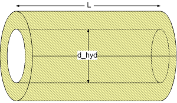
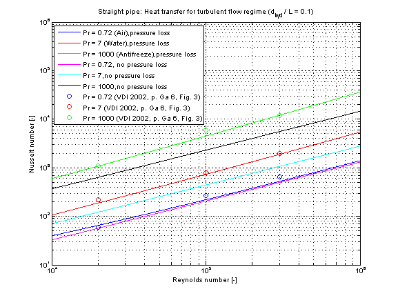

kc_turbulent |
|
Information
This information is part of the Modelica Standard Library maintained by the Modelica Association.
Calculation of mean convective heat transfer coefficient kc of a straight pipe for a hydrodynamically developed turbulent fluid flow at uniform wall temperature or uniform heat flux with neglecting or considering of pressure loss influence.
Functions kc_turbulent and kc_turbulent_KC
There are basically three differences:
- The function kc_turbulent is using kc_turbulent_KC but offers additional output variables like e.g. Reynolds number or Nusselt number and failure status (an output of 1 means that the function is not valid for the inputs).
- Generally the function kc_turbulent_KC is numerically best used for the calculation of the mean convective heat transfer coefficient kc at known mass flow rate.
- You can perform an inverse calculation from kc_turbulent_KC, where an unknown mass flow rate is calculated out of a given mean convective heat transfer coefficient kc
Restriction
- circular cross sectional area
- hydrodynamically developed fluid flow
- hydraulic diameter / length ≤ 1
- 0.6 ≤ Prandtl number ≤ 1000
- turbulent flow regime (1e4 ≤ Reynolds number ≤ 1e6)
Geometry

Calculation
Neglect pressure loss influence (roughness == 1):
The mean convective heat transfer coefficient kc for smooth straight pipes is calculated through its corresponding Nusselt number Nu according to [Dittus and Boelter in Bejan 2003, p. 424, eq. 5.76]
Nu = 0.023 * Re^(4/5) * Pr^(1/3).
Consider pressure loss influence (roughness == 2):
The mean convective heat transfer coefficient kc for rough straight pipes is calculated through its corresponding Nusselt number Nu according to [Gnielinski in VDI 2002, p. Ga 5, eq. 26]
Nu = (zeta/8)*Re*Pr/(1 + 12.7*(zeta/8)^0.5*(Pr^(2/3)-1))*(1+(d_hyd/L)^(2/3)),
where the influence of the pressure loss on the heat transfer calculation is considered through
zeta = (1.8*log10(Re)-1.5)^-2.
The mean convective heat transfer coefficient kc in dependence of the chosen calculation (neglecting or considering of pressure loss influence) results into:
kc = Nu * lambda / d_hyd
with
| d_hyd | as hydraulic diameter of straight pipe [m], |
| kc | as mean convective heat transfer coefficient [W/(m2K)], |
| lambda | as heat conductivity of fluid [W/(mK)], |
| L | as length of straight pipe [m], |
| Nu = kc*d_hyd/lambda | as mean Nusselt number [-], |
| Pr = eta*cp/lambda | as Prandtl number [-], |
| Re = rho*v*d_hyd/eta | as Reynolds number [-], |
| v | as mean velocity [m/s], |
| zeta | as pressure loss coefficient [-]. |
Note that there is no significant difference for the calculation of the mean Nusselt number Nu at a uniform wall temperature (UWT) or a uniform heat flux (UHF) as heat transfer boundary in the turbulent regime (Bejan 2003, p.303).
Verification
The mean Nusselt number Nu representing the mean convective heat transfer coefficient kc for Prandtl numbers of different fluids is shown in the figures below.

Note that the higher the Prandtl number Pr there is a higher difference in Nusselt numbers Nu comparing the neglect and consideration of pressure loss.
References
- Bejan,A.:
- Heat transfer handbook. Wiley, 2003.
- VDI:
- VDI - Wärmeatlas: Berechnungsblätter für den Wärmeübergang. Springer Verlag, 9th edition, 2002.